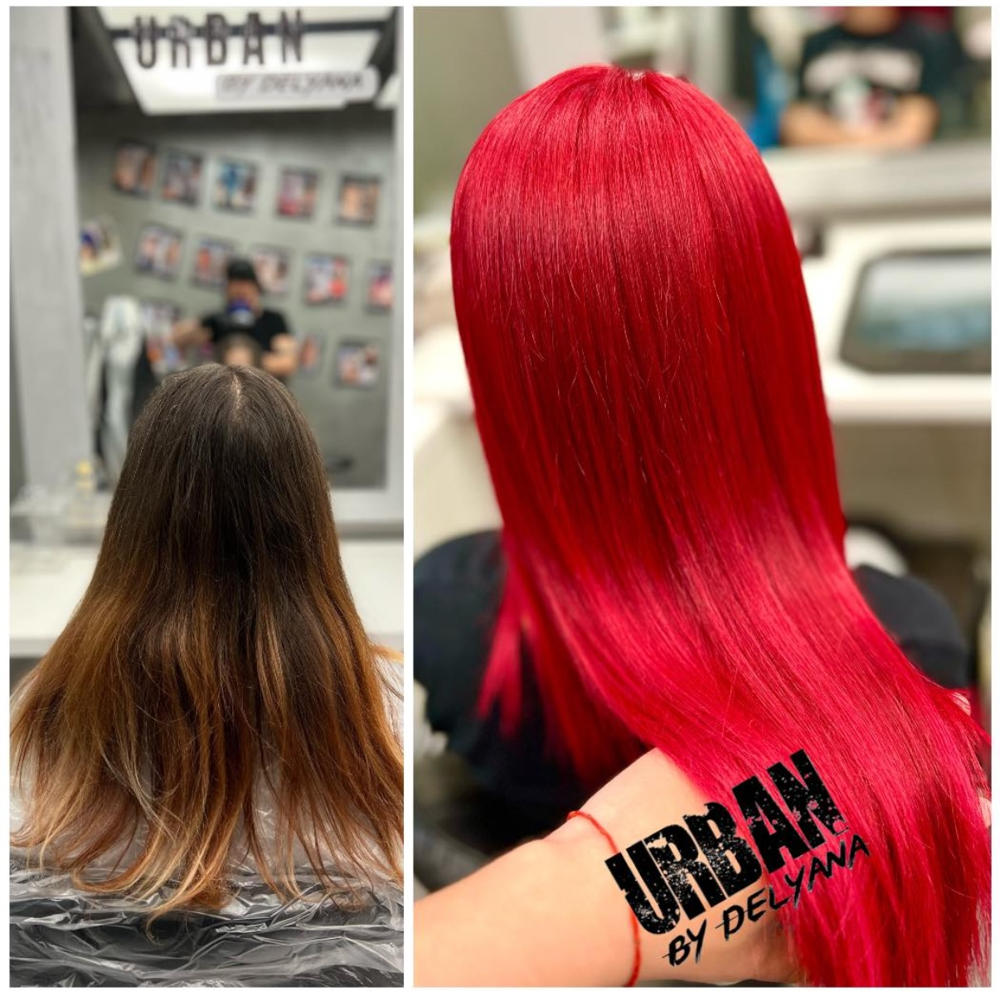

Над десетилетие практика. Един занаят. Студио, изградено около жената в стола.

Деляна · Основател и колористНад десетилетие Деляна работи изключително с цвят. Изучава как се държи светлината в косата, как нюансът чете кожата, как тиха тонална промяна може да промени начина, по който жената носи себе си.
Обучава се между София, Милано и Лондон. Връща се във Варна с едно намерение. Да изгради малко, посветено студио, в което цветът е дисциплина, а визитата е ритуал.
Всяка резервация започва с дълъг, неприбързан разговор. Цветът идва след това.
„Цветът не бива да заявява себе си. Той трябва да те направи да се чувстваш повече себе си.“
Студиото приема малък брой клиенти седмично. Всяка трансформация е лична работа на Деляна, от консултацията до финалното оформяне. Това е единственият начин работата да остава на ниво, заради което се връщат клиентите.
София · Милано · Лондон
Варна, 2018
Цвят, изключително
Само с резервация